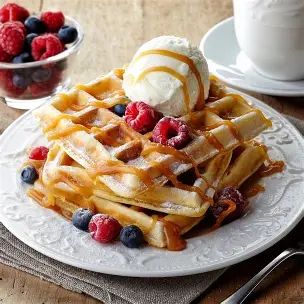

Livelovebake
Willkommen auf unserer Blogseite!
Waffeln
Heute haben wir typisch belgische Waffeln gebacken. Sie sind super lecker und einfach zuzubereiten. Das Rezept ist auf unserer Rezepte-Seite zu finden.

Heute haben wir typisch belgische Waffeln gebacken. Sie sind super lecker und einfach zuzubereiten. Das Rezept ist auf unserer Rezepte-Seite zu finden.
